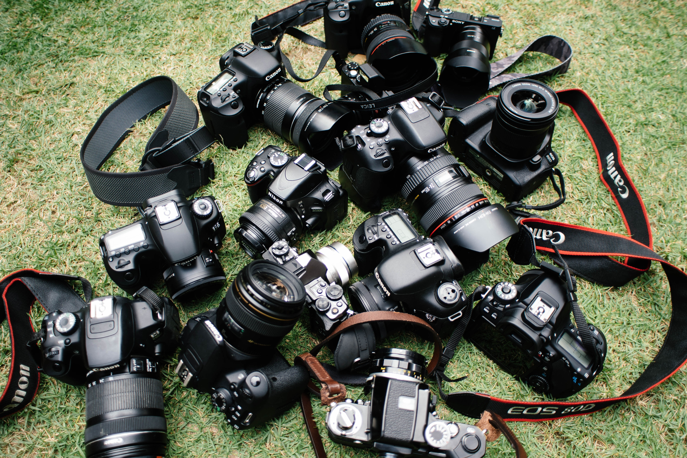

QUICK FACT: The current rate of electronic-waste (e-waste) is as follows: cell phones (replaced every 22 months), desktop computer (replaced every 2 years), portable music players (replaced every 2/3 years), DVD player (replaced every 4/5 years), printer (replaced every 5+ years), and televisions (replaced every 10+ years).
In 2009, discarded TVs, computers, peripherals (including printers, scanners, fax machines) mice, keyboards, and cell phones totaled about 2.37 million short tons.
Cell phones and other electronic items contain high amounts of precious metals like gold or silver. Americans dump phones containing over $60 million in gold/silver every year.
It takes 530 lbs of fossil fuel, 48 lbs of chemicals, and 1.5 tons of water to manufacture one computer and monitor.
Electronic items that are considered to be hazardous include, but are not limited to: Televisions and computer monitors that contain cathode ray tubes, LCD desktop monitors, LCD televisions, Plasma televisions, Portable DVD players with LCD screens.
Click here to learn about Lower East Side Ecology Center
Click here to learn about Housing Works
Click here to learn about Grow NYC
Click here to learn about Recycling Consumer Electronic Waste